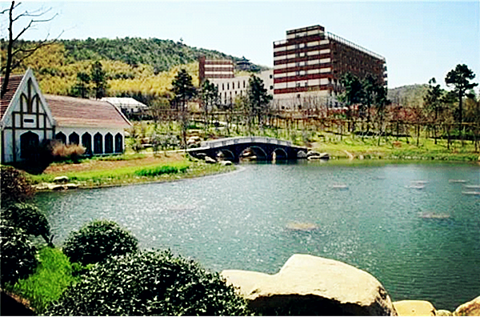

宜兴·山水禅意丨团队骑行龙池山 同心礼佛大觉寺
各地-宜兴-各地
- 止境禅修
- 环湖骑行
2天1夜
3.5小时
【线路亮点】
★华东唯一一个自行车公园，12公里绿道享受骑行美景
★大觉寺礼佛听经，聆听宜兴的山水禅意
入住宜兴云湖国际会议中心，依山傍水，舒适享受

【产品亮点】
骑行龙池山，泼墨山水间，起伏群山秀色中，山林翠竹连绵不绝，山风吹过竹影婆娑；大觉寺礼佛，观佛像庄严，禅茶幽香，祈福新年愿景，耳沐佛经梵音在心。
骑行龙池山，泼墨山水间，起伏群山秀色中，山林翠竹连绵不绝，山风吹过竹影婆娑；大觉寺礼佛，观佛像庄严，禅茶幽香，祈福新年愿景，耳沐佛经梵音在心。

【线路介绍】
宜居、宜游、宜人，这里景色秀美如画、气候温和湿润、民风温柔纯朴，自古便是安养生息之地；兴致、兴旺、兴盛，这里又是座奋发向上、兴致勃勃的情趣之城。这是宜兴，承载着一座千年古城、中国陶都的个性和韵味。
龙池山自行车公园位于江苏省宜兴市张渚镇龙池山自然风景区，是江苏省第一个自行车主题公园。公园中自行车绿道有12公里，以“绿色低碳，慢节奏生活"为主题，沿途把水库、竹林、梅林、茶园有效贯穿，在骑行中移步换景，既锻炼了身体，又欣赏了美景。

【行程安排】
Day1:上海-宜兴-龙池山山地公园骑行
08:00 上海人民广场博物馆南门集合，出发前往宜兴，车上队员自我介绍，领队安排互动游戏，一路欢声笑语。
11:30 抵达宜兴，休整片刻，享用午餐，轻量少食为午后的骑行做准备
13:00 前往龙池山自行车山地公园，开展骑行活动（2-3小时）
热身准备，踏风而行，感受宜兴的山野清新之美
17:00 骑行活动之后，我们搭车前往酒店，入住江苏云湖国际会议中心，湖光山色间尽享休闲之趣

江苏云湖国际会议中心(宜兴)地处长三角一流生态文化旅游胜地处宜兴西渚镇云湖风景区内，整体建筑依山傍水，无锡市倾心打造的八大园之一。阳羡茶文化博览园与著名佛教大师星云的祖庭、东南亚最大的佛教道场大觉寺紧邻左右。18:00 饱餐一顿，犒劳自己！当地特色美食走起~（特色菜或者野味馆）
Day2：宜兴大觉寺礼佛—返程
7:00 早起呼吸新鲜空气，享用酒店早餐
8:00 前往大觉寺礼佛观景、抄写经书、祈福新年愿景
（万佛殿、佛陀行化图、大雄宝殿、东禅楼、西净楼、成佛大道） 大觉寺位于江苏省宜兴市，为禅宗临济宗道场。南宋咸淳（1265年-1274年）年间，由志宁禅师创建，至今约有七百多年历史。大觉寺建址位于横山水库东侧，鸡龙山岕，周边资源优越，依山傍水，形成独特的地域景观特色，是现代与古文化的结合，具有仿古的江南建筑风格，通过佛教文化的引入，传播佛教思想。
12:00 享用午餐（素斋）
13:30 返程，结束愉快的旅程

【注意事项】
1、儿童价适用于身高1.4米以下的儿童，不含住宿，不含门票，不含餐，如若需要，请按成人价报名
2、适合人群：8周岁以上60岁周岁以下身体健康的户外爱好者
3、费用不包含： 如需单独入住一间房，需补单房差价
【费用说明】
1，参考价格是按照活动标配的物资及工作人员计算，团队定制时住宿及用餐标准自调
2，用餐均以桌数为单位计算。
3，团队活动统一购买户外运动高风险意外险
1、儿童价适用于身高1.4米以下的儿童，不含住宿，不含门票，不含餐，如若需要，请按成人价报名
2、适合人群：8周岁以上60岁周岁以下身体健康的户外爱好者
3、费用不包含： 如需单独入住一间房，需补单房差价
【费用说明】
1，参考价格是按照活动标配的物资及工作人员计算，团队定制时住宿及用餐标准自调
2，用餐均以桌数为单位计算。
3，团队活动统一购买户外运动高风险意外险